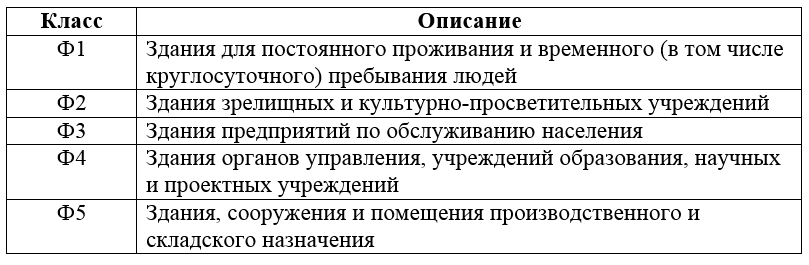
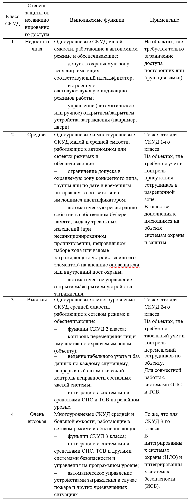
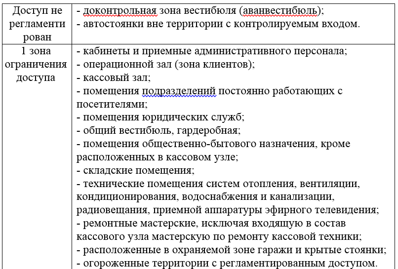
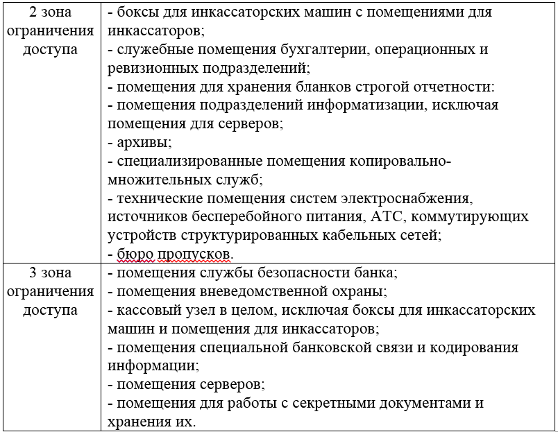

ОПРЕДЕЛЕНИЕ КОНСТРУКЦИЙ ПОМЕЩЕНИЙ ПО ОТНОШЕНИЮ К ПОЖАРНОЙ БЕЗОПАСНОСТИ, ОХРАНЕ, СИСТЕМАМ КОНТРОЛЯ И УПРАВЛЕНИЯ ДОСТУПОМ
Цели работы:
1. Научится определять конструкции помещений по отношению к пожарной безопасности;
2. Научится определять конструкции помещений по отношению к системе охраны;
3. Научится определять конструкции помещений по отношению к системе контроля и управления доступом.
Теоретические сведения:
Для построения систем пожарной безопасности необходимо для начала определить тип здания и типы защищаемых помещений для анализа необходимого класса защиты и выбора соответствующего оборудования. Для этого необходимо обратиться к классификатору зданий и сооружений пожарной и взрывопожарной безопасности. Классификатор есть в нормативном документе ТКП 45-2.02-142-2010 пункты 4.17-4.19. Классификация зданий и сооружений функциональной пожарной безопасности приведен в таблице 1.
Таблица 1 – Классификация зданий и сооружений функциональной пожарной опасности

Приведем пример для простоты понимания классификации:
1. Высшее учебное заведение БГУИР относится к классу Ф4, как учреждение образования (пункт Ф4.2 - высшее учебное заведение, учреждение повышения классификации).
2. Минский железнодорожный вокзал относится к классу Ф3, как здание по обслуживанию населения (пункт Ф3.3 – вокзалы, станции метрополитена).
Классификация система охранной безопасности:
1. По взаимодействию с угрозой:
• Пассивные;
• Активные.
2. По способу передачи информации:
• Проводные:
o Аналоговые;
o Адресные;
• Беспроводные:
o без обратной связи;
o с обратной связью;
• по GSM-сети.
Системы охранной и пожарной сигнализации предназначены для определения факта несанкционированного проникновения на охраняемый объект или появления признаков пожара, выдачи сигнала тревоги и включения исполнительных устройств (световых и звуковых оповещателей, реле и др.).
По техническим характеристикам и функциональным возможностям СКУД условно подразделяются на четыре класса (таблица2). В зависимости от особенностей объекта, конфигурации СКУД, фирмы изготовителя набор функций в каждом классе может изменяться и дополняться функциями из других классов.
Таблица 2 – Классификации СКУД.

Таким образом, СКУД 1-го и 2-го классов, работающими в автономном режиме, обычно оборудуются: квартиры, коттеджи, небольшие офисы, магазины, аптеки, гостиницы и т. п. и мало значимые зоны на важных объектах. Это позволяет рационально уменьшить число каналов, обслуживаемых дорогостоящими СКУД 3-го и 4-го классов.
СКУД 3-го и 4-го классов предназначены для оборудования крупных объектов, таких, как банки, крупные учреждения и фирмы. Несомненным достоинством этих систем является возможность практически неограниченного расширения. Такие системы позволяют обслуживать десятки тысяч пользователей.
Для определенного рода помещений существуют зоны ограничения доступа. К таким относятся серверные комнаты, помещения, в которых ведётся обработка персональных данных, спецпомещения и другие. Зоны доступа разграничивают в зависимости от уровня доступа персонала на объекте, который определен её политикой безопасности. Ниже (таблица 3) приведена примерная классификация территорий по ограничению доступа. Однако следует помнить, что для некоторых категорий зданий она может быть расширена, а может быть сужена


Требования к организации входа\выхода в выделенные зоны доступа указаны в ТР 205-09.
Практическая часть:
1. Определить конструкции помещений по отношению к пожарной безопасности.
2. Определить конструкции помещений по отношению к системе охраны.
3. Определить конструкции помещений по отношению к системе контроля и управления доступом.
4. Оформить отчет
Содержание отчета:
1. Титульный лист.
2. Цель работы.
3. Вариант задания.
4. Ход работы с пояснениями.
5. Выводы по работе.
Контрольные вопросы:
1. Как классифицировать объект по отношению к пожарной безопасности?
2. Как классифицировать объект по отношению к системе охраны?
3. Как классифицировать объект по отношению к системе контроля и управления доступом?
4. Как классифицируется территория по ограничению доступа?
5. Согласно каким техническим документам классифицируется объект по отношению к системам безопасности?